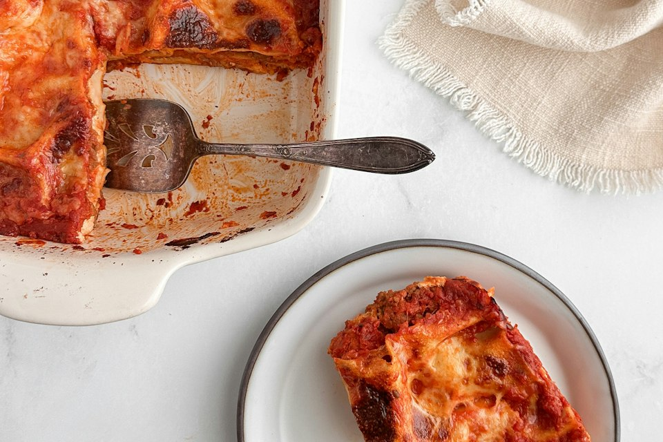

Volver al inicio
Lasaña sencilla

Foto de Sheri Silver en Unsplash.
Descripción
Esta lasaña combina láminas de pasta con una salsa de tomate y carne, ricota y mozzarella. Se hornea hasta que el queso queda dorado y burbujeante.
Es una receta casera para compartir. Puedes dejarla reposar unos minutos antes de cortarla para que mantenga mejor sus capas.
Ingredientes
- 9 láminas de lasaña
- 500 g de carne molida
- 1 cebolla pequeña, picada
- 2 dientes de ajo, picados
- 400 g de tomate triturado
- 2 cucharadas de concentrado de tomate
- 250 g de ricota
- 200 g de mozzarella rallada
- 1 cucharadita de orégano seco
- Sal y pimienta
Pasos
- Precalienta el horno a 190 °C.
- En una sartén, cocina la cebolla y el ajo con un poco de aceite hasta que se ablanden.
- Añade la carne molida y cocínala, separándola con una cuchara, hasta que esté bien cocida.
- Agrega el tomate triturado, el concentrado, el orégano, la sal y la pimienta. Cocina a fuego bajo durante 15 minutos.
- En una fuente para horno, alterna capas de salsa, láminas de pasta y ricota. Termina con salsa y mozzarella.
- Cubre la fuente con papel aluminio y hornea durante 25 minutos. Retira el papel y hornea 10 minutos más.
- Deja reposar 10 minutos antes de servir.